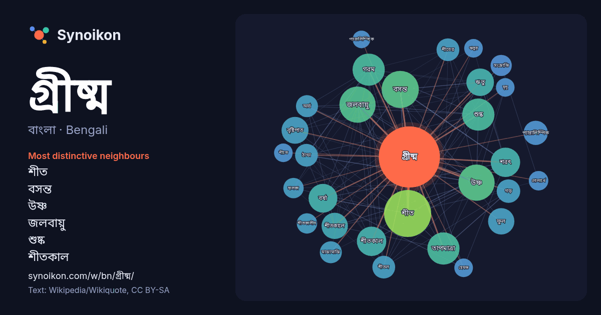

বাংলা · Bengali · word of the day list
গ্রীষ্ম
“summer” · The words found around it in 761 instances from Bengali Wikipedia, Wikiquote.

Most distinctive neighbours
- শীত 56×
- বসন্ত 36×
- উষ্ণ 30×
- জলবায়ু 26×
- শুষ্ক 24×
- শীতকাল 24×
- গরম 24×
- শরৎ 24×
- বর্ষা 23×
- ঋতু 21×
- তাপমাত্রা 19×
- বৃষ্টিপাত 17×
- প্যারালিম্পিক 17×
- শীতকালে 17×
- শীতের 15×
- ফুল 15×
- ঠান্ডা 14×
- সংক্রান্তি 14×
- শীতল 13×
- আর্দ্র 13×
× = how many times more often than in general Bengali Wikipedia text.
Most frequent neighbours
- সালের 77
- শীত 64
- বসন্ত 40
- উষ্ণ 38
- জলবায়ু 38
- সময় 36
- গরম 30
- তাপমাত্রা 30
- শুষ্ক 30
- শরৎ 25
- শীতকাল 25
- বর্ষা 24
- ঋতু 22
- বৃষ্টিপাত 21
- ফুল 20
- শীতকালে 20
- সাধারণত 19
- প্যারালিম্পিক 17
- গড় 16
- ডিগ্রি 16
In context
- গ্রীষ্ম হলো বছরের উষ্ণতম কাল, যা পৃথিবীর উত্তর গোলার্ধে সাধারণত জুন, জুলাই এবং আগস্ট জুড়ে অবস্থান করে। পৃথিবীর সর্বত্রই গ্রীষ্ম হলো কর্মোদ্যমের সময়। Wikipedia snippets · গ্রীষ্ম
- গ্রীষ্ম হল হিন্দু পঞ্জিকার গ্রীষ্মকাল। এটি হিন্দু পঞ্জিকার জ্যৈষ্ঠ ও আষাঢ় মাস এবং গ্রেগরীয় বর্ষপঞ্জির এপ্রিল ও মে মাসে পড়ে। গ্রীষ্ম ছয়টি ঋতুর মধ্যে Wikipedia snippets · গ্রীষ্ম (হিন্দু ঋতু)
- মুভি ডেটাবেজে ৮৫-র গ্রীষ্ম (ইংরেজি) অলমুভিতে ৮৫-র গ্রীষ্ম (ইংরেজি) মেটাক্রিটিকে ৮৫-র গ্রীষ্ম (ইংরেজি) রটেন টম্যাটোসে ৮৫-র গ্রীষ্ম টেমপ্লেট:François Ozon Wikipedia snippets · ৮৫-র গ্রীষ্ম
- ওপর ভিত্তি করে বৎসরের ঋতু বিভাজন করা হয়। বিশ্বের অধিকাংশ দেশে বসন্ত, গ্রীষ্ম, হেমন্ত ও শীত- এই চারটি প্রধান ঋতু দেখা যায়। কিছু দেশের জনগণ ঋতুকে আরো Wikipedia snippets · ঋতু
- চৈত্র মাস মিলে হয় বসন্ত ঋতু। বসন্ত ঋতুর আগমন ঘটে শীত চলে যাবার পর এবং গ্রীষ্ম আসার আগে। গ্রীষ্মমণ্ডলীয় এলাকায় তাপমাত্রা বাড়তে থাকে কারণ পৃথিবী সূর্যের Wikipedia snippets · বসন্ত
- ব্যবসায়ীরা লক্ষ্মী-গণেশ ও হালখাতা পূজা করেন। প্রথাগত দিক থেকে বৈশাখ মাস থেকে গ্রীষ্ম ঋতুর শুরু ধরা হয়। এই মাসে সন্ধ্যা বেলায় মাঝে মাঝে কালবৈশাখী ঝড় ওঠে। Wikipedia snippets · বৈশাখ
- সাউদার্ন গ্রীষ্ম কালে ১৯৯৯ থেকে ২০০২ সাল পর্যন্ত। ইউটিসি+১৩:০০ পূর্ব রাশিয়াতে (চুকটা এবং কামছাটকা) দিবালোক সংরক্ষণ সময় (উত্তর গোলার্ধে গ্রীষ্ম) হিসাবে Wikipedia snippets · ইউটিসি+১৩:০০
- ইউরোপে), গ্রীষ্মের অয়নকালকে গ্রীষ্মের মাঝামাঝি হিসাবে দেখা হয় এবং "মধ্য গ্রীষ্ম" হিসাবে উল্লেখ করা হয়; যদিও আজ কিছু দেশ এবং ক্যালেন্ডারে এটি গ্রীষ্মের শুরু Wikipedia snippets · উত্তরায়ণ
More Bengali words
- অরণ্য
- আয়না
- ইতিহাস
- ঈশ্বর
- কাজ
- কুকুর
- ক্ষমতা
- খাদ্য
- গান
- ঘড়ি
- ঘণ্টা
- ঘোড়া
- ছায়া
- জননী
- জলবায়ু
- জীবন
- ঝড়
- টাকা
- ট্রেন
- দারুচিনি
- দ্বীপ
- নক্ষত্র
- নীরবতা
- পরিবার
- পানি
- পাহাড়
- প্রকৃতি
- বাগান
- বিজ্ঞান
- বিড়াল
- বৃষ্টি
- ভাষা
- মধু
- মরুভূমি
- মানচিত্র
- মৃত্যু
- রাস্তা
- রুটি
- লবণ
- শরৎ
- শহর
- শিল্প
- শীত
- সত্য
- সময়
- সেতু
- সোনা
- স্বাস্থ্য
- হৃদয়
Precomputed on 2026-10-09 with default settings (±5 words, medium corpus). The interactive map can refresh it with live data.